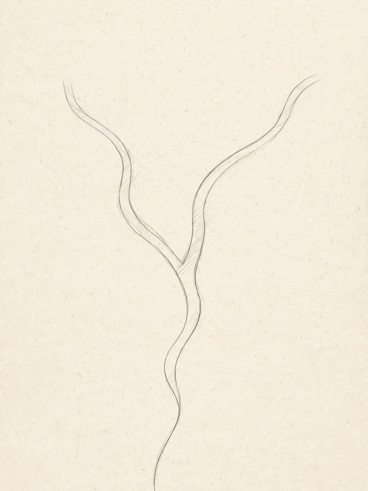

Thinking, Fast and Slow

Thinking, Fast and Slow
| Author | Daniel Kahneman |
|---|---|
| Published | 2011 (Farrar, Straus and Giroux) |
| Subject | Psychology, decision-making |
| Pages | 499 |
Thinking, Fast and Slow is a 2011 popular science book by Israeli-American psychologist Daniel Kahneman, winner of the 2002 Nobel Memorial Prize in Economic Sciences. Summarising research Kahneman conducted over decades, much of it with Amos Tversky, the book distinguishes two modes of thought — a fast, intuitive "System 1" and a slow, deliberate "System 2" — and surveys the cognitive biases that arise when intuitive judgment substitutes simple answers for hard questions. It was a major bestseller and is widely credited with popularising behavioural economics.
Contents
The book is organised in five parts. Part One introduces the two systems and concepts including cognitive ease, priming, and "WYSIATI" ("What You See Is All There Is") — System 1's tendency to build the best possible story from available information while ignoring what is missing. Part Two covers the heuristics of judgment: anchoring, availability, representativeness, the conjunction fallacy, and base-rate neglect. Part Three treats overconfidence, framing effects, and the planning fallacy, drawing on Kahneman's work on expert intuition and his "outside view" remedy. Part Four, "Choices", presents prospect theory — the loss-averse, reference-dependent account of risky choice developed by Kahneman and Tversky in 1979 — and the endowment effect and framing of outcomes. Part Five distinguishes the "experiencing self" from the "remembering self", introducing the peak–end rule and duration neglect, which grew out of Kahneman's studies of remembered pain and well-being.
Reception
The book received the National Academy of Sciences' Communication Award and the Los Angeles Times Book Prize, appeared on numerous best-of-the-year lists, and sold millions of copies; the New York Times reviewer Jim Holt called Kahneman's work a "masterpiece". It also became a standard reference in discussions of public policy "nudging", medical decision-making, and forecasting.
Replication discussion
Some material in the book — particularly Chapter 4, on social priming — rested on studies that later failed to replicate during psychology's replication crisis. Kahneman responded publicly in 2012 by urging priming researchers to restore the field's credibility, and in 2017 wrote that he had placed too much faith in underpowered studies; he regarded the book's central claims about heuristics, biases, and prospect theory, supported by stronger evidence, as unaffected. The episode is often cited as an example of a senior scientist engaging openly with replication failures.
See also: Heuristics in judgment and decision-making · Cognitive bias · Prospect theory · Daniel Kahneman